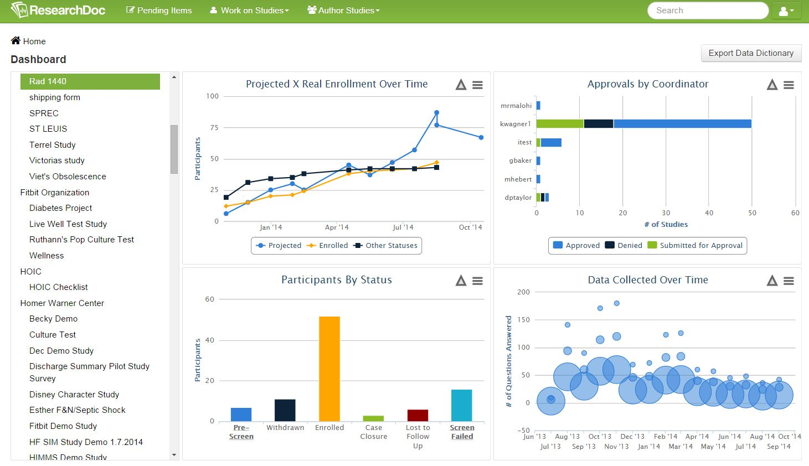

Work on Studies
Work on Studies is where a user can select from options to enter data for their study. This includes:
Dashboard
High Level View of an Organization or a Study. 
Data Browser
View of Data for a Study

Pre-Screening
List of All Results of a Pre-Screening Query

Schedule
List of All Scheduled Events

Study Enrollment
List of All Participants Enrolled in a Study

Study Forms
All Study Forms for an Organization